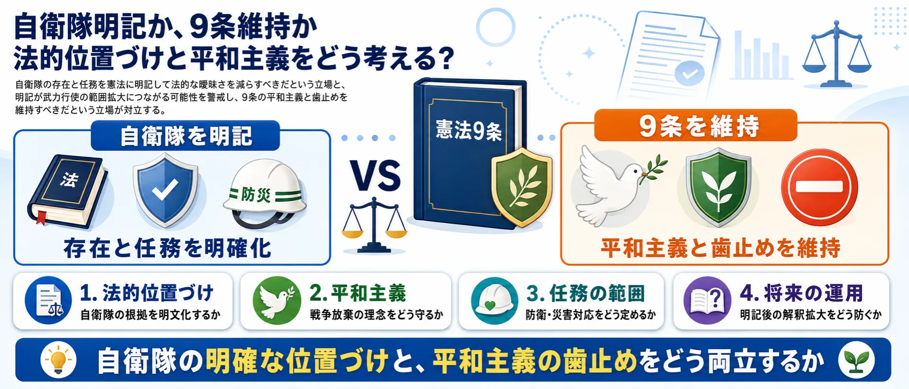
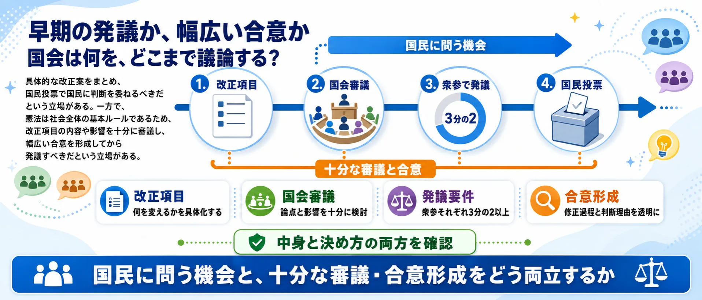

争点1
改憲全般
憲法を社会の変化に合わせるのか、権力を縛る原則として慎重に守るのか。
改正推進：現実に合うルールへ慎重・反対：拙速な変更を防ぐ

現実の安全保障に合わせて改正するのか、平和主義と権力制限を守るのか？
Yahooリアルタイム検索で取得したX反応422件を、Hermesが6つの論点と4つのスタンスに再分類しました。世論調査ではなく、取得サンプルの論点比較です。
元教員の平和学習ボランティアと、安全保障に不安を感じる会社員が、公民館の前で憲法改正をめぐって向き合う物語です。平和主義を守りたい切実さと、現実の脅威に備えたい焦りのどちらも描き、最後は国民投票の前に何を確かめるべきかを問いかけます。
※ この漫画はSNS上の代表的な意見をもとに構成したフィクションです
憲法改正は、改正全般への賛否だけでは整理できません。9条、緊急事態条項、国民投票の公平性、発議手続き、情報環境ではそれぞれ対立の理由が異なります。6つの図解を確認してから、自分が重く見る論点を選んでください。画像はタップで拡大できます。
改憲全般
憲法を社会の変化に合わせるのか、権力を縛る原則として慎重に守るのか。
9条・自衛隊
自衛隊の存在と任務を明記する意義と、9条の平和主義への影響を考える。

緊急事態条項
重大な危機への即応力と、政府への権限集中を防ぐ仕組みをどう設計するか。

国民投票・広告
自由な意見表明を守りながら、資金力や広告量の差をどう整えるか。

政党・発議手続き
具体案を国民に問う機会と、国会での十分な審議・合意形成をどう両立するか。

情報・議論の質
条文・根拠・発言主体・引用関係を確認し、文脈不足の情報をどう扱うか。

使い方: 6つの争点を図解で確認してから、次の投票で「一番気になる論点」を選んでください。
憲法改正は、9条や緊急事態条項だけでなく、国民投票の公平性や議論の進め方まで含むテーマです。まず一番気になる論点を選び、次に改正への総合的な考えを選んでください。
1一番気になる論点を選ぶ （全2問）
2憲法改正への考えは？ 答えたらアリーナに表示します
中心の「憲法改正」を6つの論点セクターが囲みます。扇の大きさは投稿数、中心からの距離は主張の強さ（外側ほど強い反応）、点の色は立場（青=改正推進 / 赤=慎重・反対 / 緑=手続き重視 / 灰=中立）。点をクリックすると元のXポストを開きます。

憲法を時代に合わせるべきか、現行憲法の原則を守るべきか。
自衛隊を憲法に明記する意義と、9条の平和主義への影響。
災害などへの迅速な対応と、政府への権限集中リスク。
CM・ネット広告・資金力の差を含む国民投票の公平性。
政党の姿勢、国会での合意形成、発議までの進め方。
事実確認、過激な断定、論点を理解できる情報環境。
日本国憲法は1947年の施行以来、一度も改正されたことがありません。近年の改憲論議では、9条への自衛隊明記、大規模災害時などに政府の権限を強化する緊急事態条項の創設、教育無償化、参議院の合区解消などが主な項目として挙げられています。改正には衆参両院で3分の2以上の賛成による発議と、国民投票での過半数の賛成が必要です。
賛成する立場からは「自衛隊の憲法上の位置づけを明確にすべき」「現行憲法は時代に合わなくなっている」という主張があり、反対する立場からは「9条改正は戦争への道を開く」「緊急事態条項は権力の濫用につながる」「改憲よりも優先すべき課題がある」といった主張があります。
また、賛否そのものだけでなく、国民投票時のCM規制やネット広告のあり方など、手続き面の公平性をめぐる議論も続いており、世代や支持政党によって意見の分布が大きく異なるテーマです。
自衛隊明記、防衛、緊急事態対応などを理由に、憲法改正を進めるべきと見る立場。
9条改正や緊急事態条項は平和主義の後退や権限集中につながると見る立場。
改憲の中身以前に、広告規制、資金、SNS、国民投票法の整備を重視する立場。
政党批判、強い断定、文脈不足など、記事化前に確認が必要な反応。
| 分類 | 9条 改正 | 国民投票 改憲 | 国民投票法 広告規制 憲法改正 -rt | 憲法9条 改正 自衛隊 -rt | 憲法改正 反対 | 憲法改正 自衛隊 明記 -rt | 憲法改正 賛成 | 憲法改正 賛成 反対 -rt | 改憲 賛成 OR 反対 | 緊急事態条項 | 緊急事態条項 賛成 反対 -rt | 合計 |
|---|---|---|---|---|---|---|---|---|---|---|---|---|
| 改憲賛成・推進 | 18 | 9 | 0 | 2 | 0 | 0 | 0 | 3 | 7 | 10 | 0 | 49 |
| 改憲反対・護憲 | 15 | 14 | 0 | 4 | 34 | 2 | 1 | 16 | 26 | 1 | 0 | 113 |
| 9条・自衛隊明記に賛成 | 0 | 0 | 0 | 24 | 0 | 21 | 0 | 2 | 0 | 0 | 0 | 47 |
| 9条・自衛隊明記に反対 | 0 | 0 | 0 | 4 | 0 | 0 | 0 | 0 | 0 | 0 | 0 | 4 |
| 緊急事態条項に賛成 | 0 | 0 | 0 | 0 | 0 | 0 | 0 | 0 | 0 | 5 | 0 | 5 |
| 緊急事態条項に反対 | 0 | 0 | 0 | 2 | 0 | 11 | 0 | 1 | 0 | 16 | 21 | 51 |
| 国民投票法・広告規制を重視 | 0 | 2 | 39 | 1 | 0 | 4 | 3 | 12 | 0 | 0 | 15 | 76 |
| 政党・議員批判 | 1 | 0 | 0 | 0 | 1 | 0 | 13 | 3 | 6 | 1 | 0 | 25 |
| 事実確認・情報共有 | 1 | 6 | 0 | 0 | 1 | 0 | 6 | 0 | 0 | 0 | 0 | 14 |
| 未確認・過激表現 | 0 | 0 | 0 | 0 | 0 | 0 | 2 | 0 | 1 | 0 | 0 | 3 |
| その他・分類保留 | 3 | 7 | 0 | 1 | 1 | 1 | 14 | 3 | 0 | 5 | 0 | 35 |
| 分類 | 改憲支持 | 改憲反対 | 手続き重視 | 慎重 | 中立 | 未確認 | その他 | 反対 | 問題視 | 支持 | 評価しない | 項目別反対 | 合計 |
|---|---|---|---|---|---|---|---|---|---|---|---|---|---|
| 改憲賛成・推進 | 44 | 0 | 0 | 0 | 0 | 0 | 0 | 0 | 0 | 5 | 0 | 0 | 49 |
| 改憲反対・護憲 | 0 | 91 | 0 | 0 | 0 | 0 | 0 | 21 | 0 | 0 | 1 | 0 | 113 |
| 9条・自衛隊明記に賛成 | 0 | 0 | 0 | 0 | 0 | 0 | 0 | 0 | 0 | 47 | 0 | 0 | 47 |
| 9条・自衛隊明記に反対 | 0 | 0 | 0 | 0 | 0 | 0 | 0 | 4 | 0 | 0 | 0 | 0 | 4 |
| 緊急事態条項に賛成 | 5 | 0 | 0 | 0 | 0 | 0 | 0 | 0 | 0 | 0 | 0 | 0 | 5 |
| 緊急事態条項に反対 | 0 | 0 | 0 | 0 | 0 | 0 | 0 | 35 | 0 | 0 | 0 | 16 | 51 |
| 国民投票法・広告規制を重視 | 0 | 0 | 5 | 18 | 0 | 0 | 0 | 0 | 53 | 0 | 0 | 0 | 76 |
| 政党・議員批判 | 10 | 9 | 0 | 0 | 0 | 2 | 1 | 2 | 0 | 0 | 1 | 0 | 25 |
| 事実確認・情報共有 | 0 | 0 | 0 | 0 | 14 | 0 | 0 | 0 | 0 | 0 | 0 | 0 | 14 |
| 未確認・過激表現 | 0 | 0 | 0 | 0 | 0 | 3 | 0 | 0 | 0 | 0 | 0 | 0 | 3 |
| その他・分類保留 | 12 | 7 | 0 | 0 | 12 | 0 | 1 | 0 | 0 | 0 | 3 | 0 | 35 |
 生成AIと著作権
生成AIと著作権 自転車の青切符
自転車の青切符 部活動の地域移行
部活動の地域移行